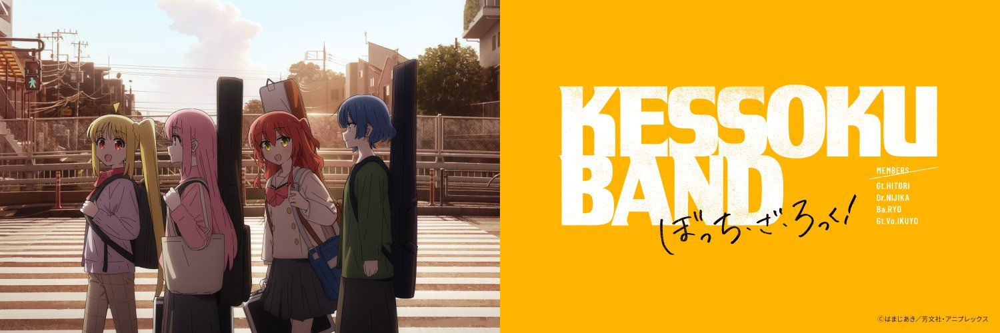

Contato
Fale com a gente
Dúvidas, sugestões ou só vontade de falar sobre a Kessoku Band? Veja se a resposta já está nas perguntas frequentes ou mande uma mensagem.

よくある質問Perguntas frequentes
Antes de escrever
Os 12 episódios estão na Crunchyroll, com áudio original em japonês e dublagem em português brasileiro. Os dois filmes compilatórios também entraram no catálogo da plataforma em alguns países.
Sim! A 2ª temporada foi anunciada oficialmente em fevereiro de 2025, durante um show da turnê da Kessoku Band em Tóquio. A CloverWorks continua na animação e a direção passa para Yusuke Yamamoto. A data de estreia ainda não foi divulgada.
Sim! O álbum Kessoku Band saiu em dezembro de 2022 e chegou ao 1º lugar da Oricon, a principal parada do Japão. Em 2024 veio o EP Re:Kessoku Band, com as músicas dos filmes. Dá para ouvir no Spotify, Apple Music e YouTube, ou no player aqui do site.
São dois filmes que recontam a primeira temporada para o cinema. Estrearam no Japão em junho e agosto de 2024 e foram exibidos no Ocidente como “Recap Part 1 & 2”. Veja mais na página Os Filmes.
Envie sua mensagem
Respondemos pelo e-mail que você informar.